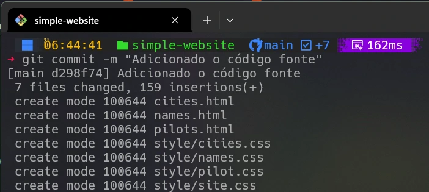
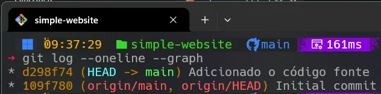
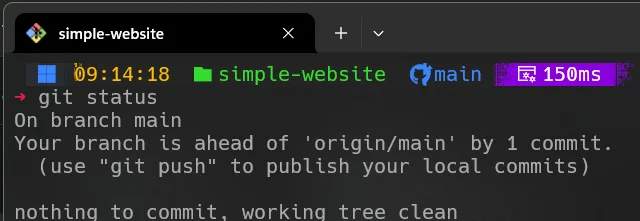
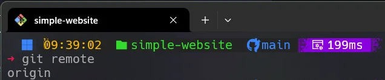
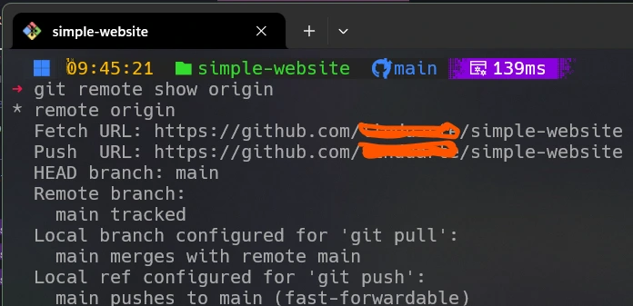
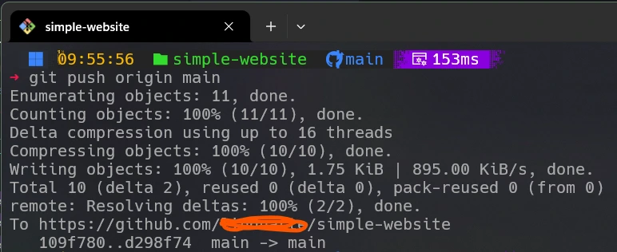
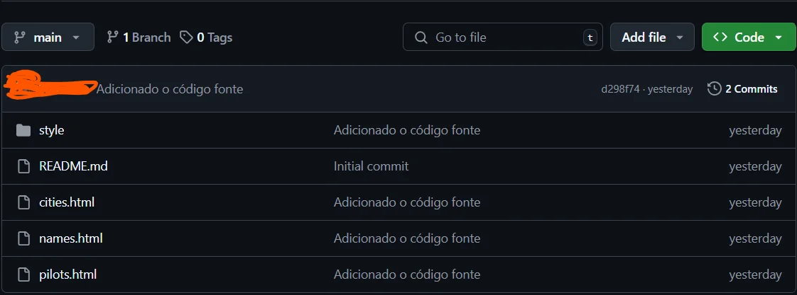
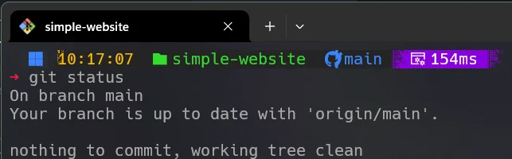

Essa forma do comando git commit --message "Arquivos iniciais do projeto adicionados"
é muito usada quando você tem arquivos preparados que estão prontos para serem adicionados permanentemente ao histórico
do seu projeto e deseja documentar o que as mudanças envolvem.
Existe uma situação particular de commit em que não há arquivos preparados, mas ainda assim você deseja registrar um ponto
na história do projeto. Para isso, você pode usar a opção --allow-empty.
Outra forma de utilizar o commit é atualizar o último commit usando git commit --amend.
O hash é um código único que identifica um commit. Exemplo:
d298f74fe5768dca084fd29d93bc24f48ad25088.

A imagem mostra a execução do comando git commit e confirma o registro das alterações no repositório.

A título ilustrativo, usando o comando git log --oneline --graph, obtemos a relação de commits realizados no projeto.
Nota-se os hashes associados a cada commit. Observe que as representações gráficas feitas pelo GitGraph mostram a aplicação desses commits
e seus respectivos hashes. Vale salientar que o hash id=109f780 foi gerado ao criar o repositório no GitHub.
Nota-se também que ao lado do hash id=d298f74 aparece a mensagem usada no commit.

Podemos observar que a imagem mostra uma mensagem indicando que nosso ramo (branch) está à frente do repositório remoto
(origin/main). Isso sugere o uso do comando git push.
Antes de usar o comando git push, vamos verificar o repositório remoto com git remote.

O Git identifica o repositório remoto como origin.

O repositório remoto possui operações de fetch e push.
Para enviar as alterações ao GitHub, usamos:
git push origin main
Após o push, o GitHub exibirá o commit enviado.

Finalizando esta etapa, podemos ver o status do repositório local em relação ao remoto, indicando que ambos estão equalizados.

Diagrama Mermaid para o Git graph
%%{init: { 'logLevel': 'debug', 'theme': 'base', 'gitGraph': {'showBranches': true,
'showCommitLabel':true,'mainBranchOrder': 0}} }%%
gitGraph
commit id: "0-109f780"
commit id: "1-d298f74"